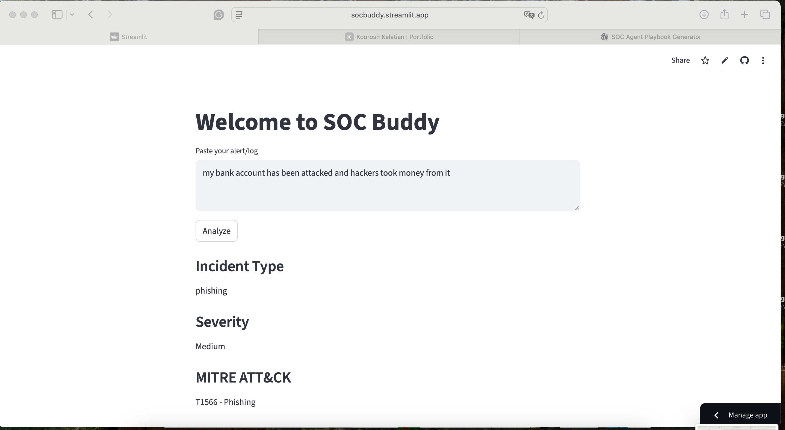
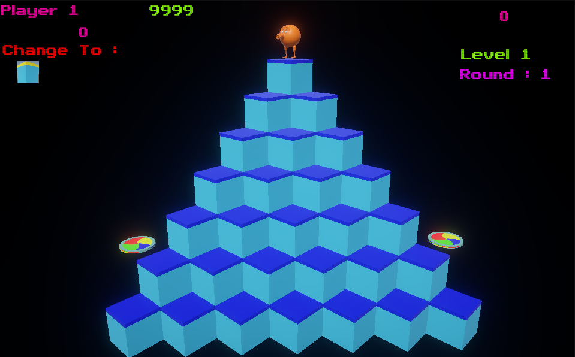
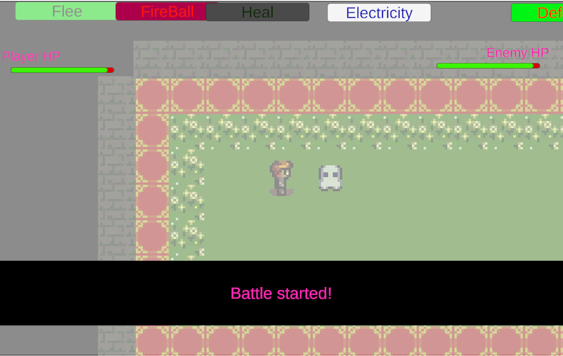
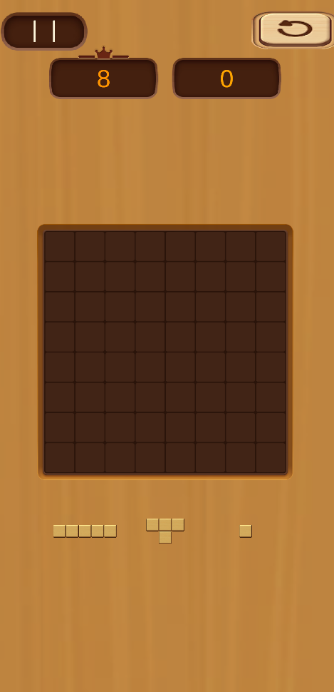
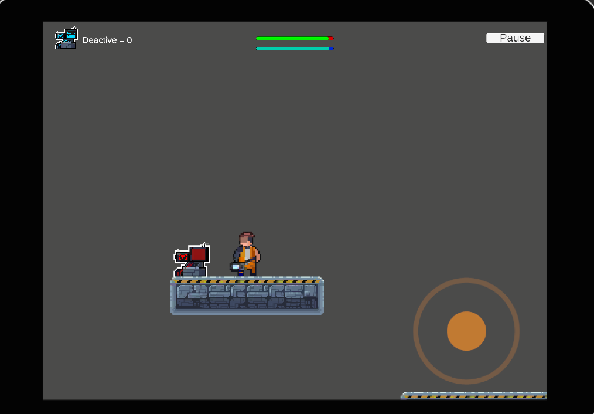

I build real-world software systems — from AI-powered applications and cybersecurity blue-team tools to gameplay systems and interactive experiences, all with live demos and full implementations.
I'm a Game Programming graduate from George Brown College with a strong foundation in software engineering covering algorithms, OOP, system design, and full SDLC.
Alongside game development,I've built AI-powered applications and security tools using Python, Scikit-learn, and Streamlit. I hold a Google Cybersecurity Certificate and have hands-on experience developing a SOC Playbook Assistant that maps threats to MITRE ATT&CK frameworks. I enjoy solving real-world problems through clean, logical code and I'm actively seeking software development or cybersecurity internships where I can grow as an engineer.

Python, Pandas, Scikit-learn, Streamlit
Machine learning system that classifies real-world messages as spam or legitimate with a live prediction interface.

Python, Scapy, Splunk Cloud, SPL, HEC, Git
Real-time network IDS that captures live traffic, detects cyber threats, and ships structured alerts to Splunk Cloud for SOC-style monitoring.

Python, Streamlit, JSON, Regex
Security operations tool that analyzes alerts/logs and generates structured incident response playbooks for SOC analysts.

Python, Streamlit, Data Analysis
Data-driven application that analyzes BMI and generates personalized nutrition recommendations.

Unity, C#
Recreation of the classic QBert arcade game with interactive mechanics and enemy behaviors.

Unity, C#
RPG-style game featuring combat, inventory systems, and basic AI-driven enemies.

Unity 2D, C#, GitHub
Interactive 2D puzzle game featuring grid-based mechanics and player-driven gameplay systems.

Unity, Mobile Development
2D platformer mobile game built with touch controls, levels, and enemy interactions.
Student Association at George Brown College | June 2025 – April 2026
(The game is still in development phase)
Campus Living Centers | August 2024 – April 2025
George Brown College - Toronto | 2023 – 2026